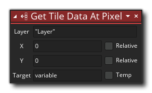

La description
Avec cette action, vous pouvez obtenir le tiledata pour une cellule de tuile sur une couche de tilemap à partir d'une position. Le tiledata est simplement une valeur qui reflète l'index de la tuile ainsi que les valeurs de retournement, de miroir et de rotation, ainsi que tous les masques de tuiles personnalisés que vous avez utilisés. Avec cette action, vous devez d'abord fournir la couche à cibler en utilisant le nom de la couche (une chaîne) tel que défini dans l'éditeur de pièce, puis les axes x et y dans la pièce pour obtenir la mosaïque. La valeur de tiledata retournée coïncidera avec n'importe quelle cellule de tilemap qui se trouve à ce point. Par exemple, si vos tilesets sont 16x16, alors la couche tilemap contiendra des tiles dans des cellules de 16x16 pixels, donc si vous utilisez cette action pour cibler la position de la pièce (8, 8), vous obtiendrez les carreaux de la cellule ( 0, 0) de la tilemap.
REMARQUE: La couche sélectionnée doit avoir été définie comme une couche Tilemap dans l'éditeur de pièce, sinon vous risquez d'obtenir des erreurs.
La valeur retournée sera alors stockée dans la variable cible qui peut avoir été créée précédemment ou peut être une nouvelle variable temporaire (si vous cochez la case "Temp"). Pour plus d'informations sur tiledata, veuillez consulter la section GML sur Tilemaps - Tile Functions.
Syntaxe de l'action:
Arguments:
Argument La description Layer La couche avec le tilemap à cibler X La position le long de l'axe horizontal (X) pour définir le tiledata pour Y La position le long de l'axe vertical (Y) pour définir la mosaïque
Exemple:
Le code de bloc d'action ci-dessus teste un clic de souris et quand il est reçu, il récupère le carreau de la cellule qui coïncide avec la position de la souris. Ces données sont ensuite modifiées et renvoyées à la couche de tilemap, en faisant tourner la mosaïque dans cette cellule.